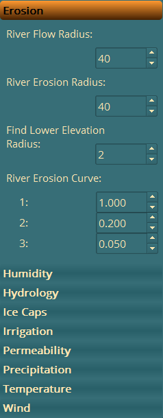
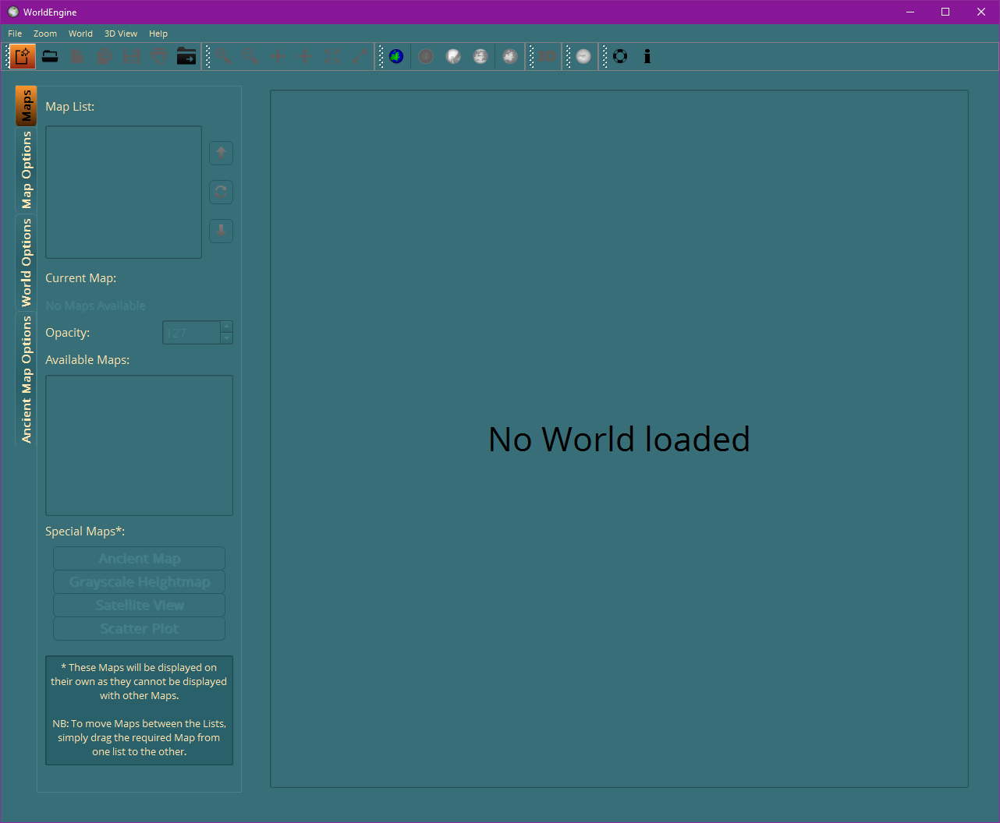
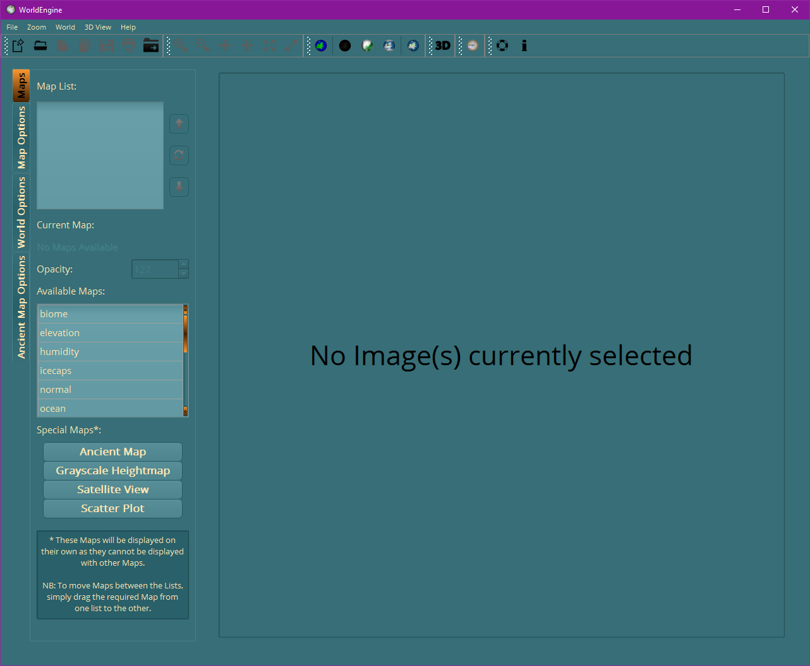
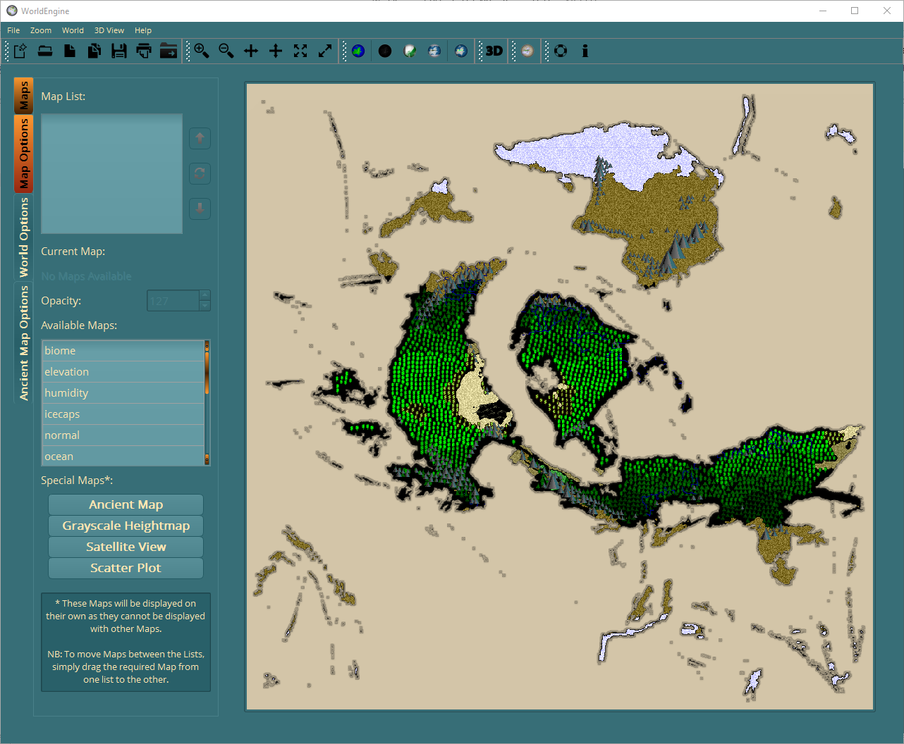
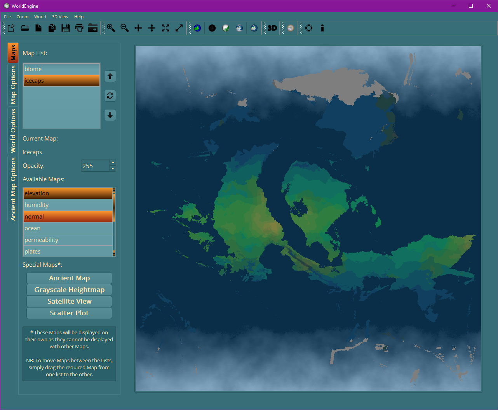

As I stated in the Introduction, WorldEngine can be run from the Command Line. There are several examples on the WorldEngine website, so I'll just show you one here:
worldengine world -s 1 -n seed1
As you can see above, it's pretty simple to generate a world. However, since there are over 10 possible options in the Command Line version, the text can get quite long and complicated.
This is where my GUI comes in. Not only does it handle all of the Command Line options, but I have changed the WorldEngine code to allow access to many, many more options, which will enable you to create much more personalised worlds.
As an example, the options available for the Erosion Simulation are shown below (normally these would be hard coded into WorldEngine):

The best way to run my GUI is to download the prebuilt Windows (x64) files and simply click on the we_gui_x64.exe file. An alternative is to download the source, get hold of a copy of PyCharm Community Edition (http://www.jetbrains.com/pycharm/download/) and load up the project from the source folder. Then it's simply a matter of clicking on Run, then Run and selecting the main.py file. This should run the GUI and you should now see this on your screen:

Hopefully this is a fairly standard Windows UI, so you should be familiar with how to use it and a lot of the available options. To go into more detail about the available menus, buttons and other options, please select the relevant heading in the Table of Contents.
The next step is to create a World.....
For the purposes of this quick intro, we won't be touching any of the options, but just going straight to creating a World. So, simply click on the World Options tab on the left hand side of the UI, enter a value of 60247 in the World Seed option, select Yes for the Enable Verbose Messages? option and then click on the button labelled Generate World and All Maps.
If everything is working correctly, then you should see a pop-up like this:

As you can see, this pop-up displays some basic information about the World you are creating and tells you that WorldEngine is now starting to work. NB: The UI will become unresponsive whilst the Simulations are running.
After a fairly long time (10+ minutes on my laptop with the above settings), you should see this in the pop-up:

Now, simply click on the X in the top right of the pop-up and you should now see this in the Main Window:

As you can see, Creating (or Loading, as it's just the same) a World populates the Available Maps list and also opens up the Special Maps* buttons (if the relevant Map exists).
To view one of the Special Maps*, simply click the button and you should see something like this:

To view the other Maps, you can simply drag and drop them between the Map List and Available Maps lists.
NB: There is an option to change the Opacity of each Map (the LOWEST Map in the Map List will ALWAYS have an Opacity of 255, and this doesn't apply to the Special Maps*) so that you can build up unlimited different views in the Main Viewport.
Once you have moved one, or more, Maps to the Map List, simply click on the Refresh button () to regenerate the view in the Main Viewport:

Finally, to change the order of the Maps, simply select the Map and click on the Up, or Down, arrow immediately above/below the Refresh button.
Well, that's enough of an introduction, so have fun and if you have any issues, please let me know (Getting Help) and I'll try to assist as much as possible.
Created with the Personal Edition of HelpNDoc: Easily create EBooks